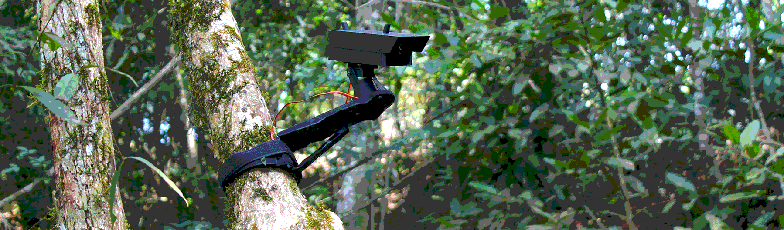

----------------------------------------------------------------------------
__ ___ __ ___ __ _
/ / < / _/_// _ \ ____ / /_ ____ ___ ___ (_)___ __ _ ___
/ _ \ / /_/_/ / // //___// __// __// _ \ / _ \ / /(_-< / ' \/ _ \
/_.__//_//_/ \___/ \__//_/ \___// .__//_//___//_/_/_/\___/
/_/
----------------------------------------------------------------------------

b1/0-tropismo é um sistema maquínico que atua e interage dentro da natureza. Este sistema cinético é guiado por estímulos externos de luz e som. Ao converter esses estímulos captados (fotônicos e sónicos) em sinal digital, o sistema conduz o fenômeno percebido na paisagem natural para um ambiente digital e vice-versa, oferecendo meios para propagar esses sinais, os quais antes eram externos à máquina.
Durante o período de exposição, a cada dia, o operador humano "colhe" e transmite os dados desse/para o sistema e o expõe a um processo de decodificação, a qual diariamente será publicado nesta página, dando continuidade à um cliclo propagação progressiva do fenômeno percebido pelo sistema.
------------------------
------------------------
------------------------